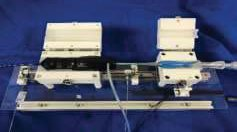

Academic bedside robots · tmdu_harada2020
TMDU pneumatic
TMDU pneumatically driven catheter-gripping robot for hot-balloon ablation

1 / 3


- Family
- Academic bedside robots (academic)
- Devices
- SATAKE HotBalloon catheter (Toray) and its sheath
- Degrees of freedom
- 1 (push/pull)
- Push
- Other drives
- Twist
- None
- Tested up to
- Animal
- Sim-to-real
- None found — No simulation-trained controller found for this robot.
Testing
- Highest level
- Animal
- What was tested
- pulmonary-vein blocking with the balloon in a live pig (one animal described); anomaly detection tested on an excised pig heart (harada2020_development Sec. IV-V)
- Key numbers
- push force about 10 N; gripper magnets 11.8 N (9 mm) and 4.3 N (5 mm) (harada2020_development Sec. III)
Mechanism
- Push (translation)
- other: pneumatic air cylinder (100 mm stroke) moving a magnet-closed catheter gripper
- Twist (rotation)
- none
- Device range
- N.R.
- Target anatomy
- left atrium / pulmonary veins (hot-balloon catheter ablation)
Sensing and interface
- Force sensing
- contact force estimated from cylinder air pressure; magnetic distance sensor on the gripper
- Leader and haptics
- haptic display of the pressure-estimated force (prototype)
- Imaging
- X-ray fluoroscopy
- Sterility
- N.R.
Size
- Footprint (mm)
- N.R.
- Mass (kg)
- N.R.
Simulation
- Simulation model
- none found
- Sim-trained controller
- none found
Versions
- Lineage
- single prototype (harada2020_development)
Sources
- Development of Pneumatically Driven Surgical Robot for Catheter Ablation · 2020 IEEE/SICE International Symposium on System Integration (SII), 2020 · doi:10.1109/sii46433.2020.9026176 [harada2020_development]
Notes
- Notes
- Back-drivable pneumatic actuation (Kawashima's surgical-robot line).
This record
- Read level
- full
- Picture
- harada2020_development Fig. 2 (catheter gripping robot photo), SII 2020, doi:10.1109/SII46433.2020.9026176 ↗ — licence: publisher copyright (IEEE); grade C
- Picture changes
- native extract of the embedded photo (132 x 237, stored rotated) and rotated 90 deg to the page orientation; no crop, no erase; not upscaled
- Found by
- gap: Gap searches for robots the other searches missed.
- Data
- JSON · YAML:
records/robots/tmdu_harada2020.yaml - Correction
- Suggest a correction [repository not created yet]